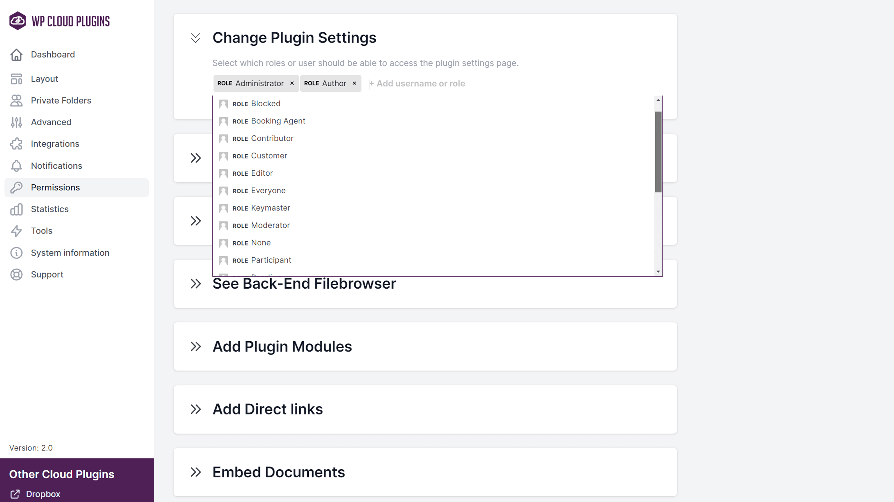
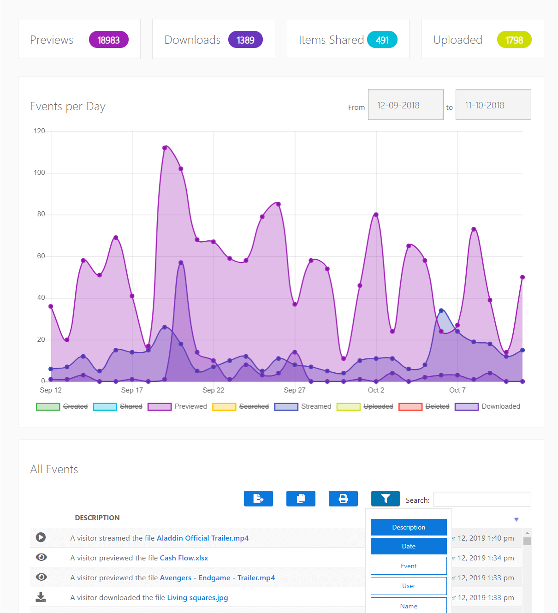
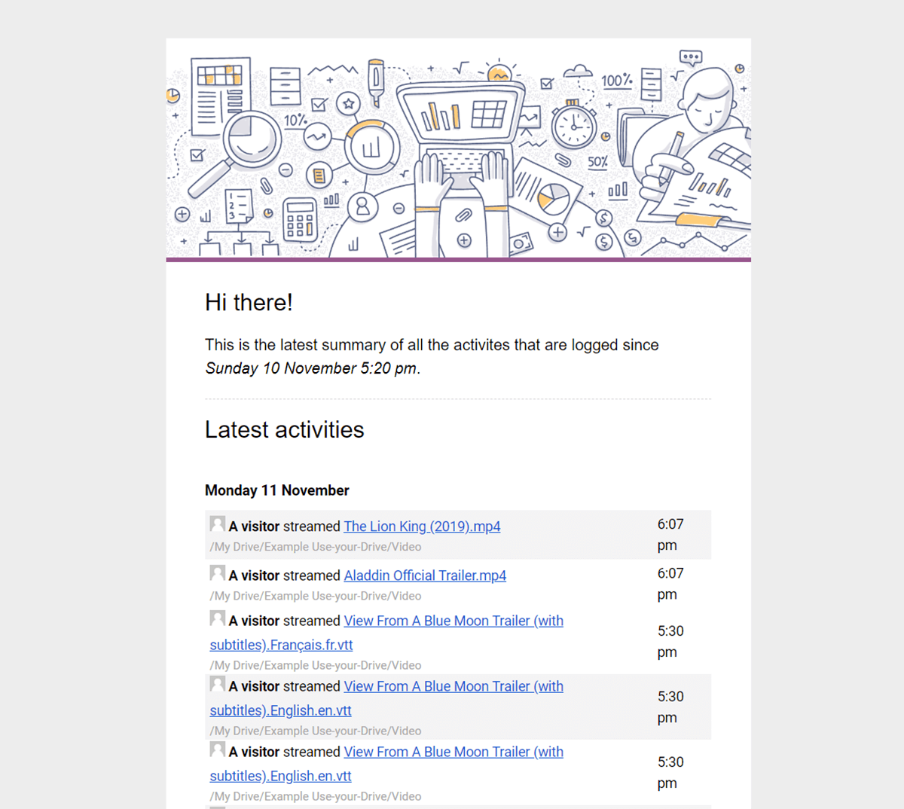
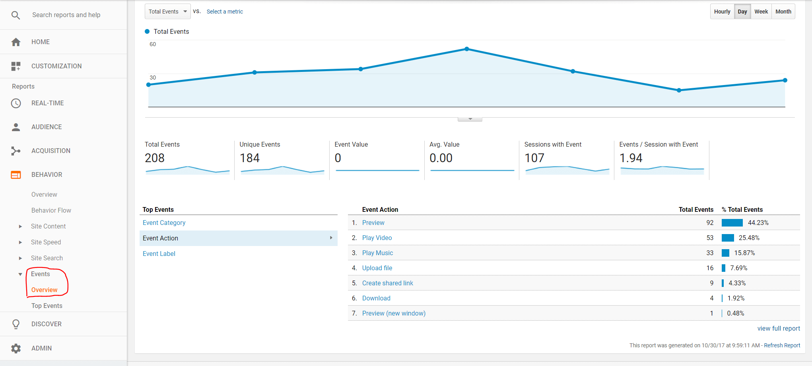

Global Options
All main plugin options can be set via the Share-one-Drive menu page. Most settings will speak for
themselves but some others might need some additional information.
Private Folders
Private Folders allow you to link specific WordPress users to specific folders in the cloud.
There are two ways you can use this feature: Manually and Automatically. In the Manual mode, you
will link your WordPress Users to their own folder on your OneDrive by hand. In the Automatic
mode, you let the plugin automatically manage the Private Folders.
Global settings automatically linked Private Folders
warning
The following settings are
only used for all modules with
automatically linked
Private Folders
| Setting |
Description |
| Create Private Folders on registration |
Automatically create the Private Folders for an user after their registration on the site. |
| Create all Private Folders the 1st time a module is used |
Immediately create all the Private Folders during the first rendering of a module that has the Private Folders feature enabled. |
| Update Private Folders after profile update |
If needed, update the name of the Private Folder for an user after they have updated their profile. |
| Delete Private Folders after deleting WP User |
Try to remove the users Private Folders after their account is deleted. |
| Name Template |
Template used when a Private Folder for an user is created. This template can contain
several placeholders like %user_login%, %user_firstname%,
%user_lastname%, %user_email%, %display_name%,
%ID%, %user_role{key}%, %date_{date_format}%, %yyyy-mm-dd%,
%hh:mm%, %uniqueID%, %directory_separator% (/).
Use %usermeta_{key}% to get your users custom meta
value, where
{key} is the meta key to retrieve.
Use %postmeta_{key}% to get your post custom meta value, where
{key} is the meta key to retrieve.
Use %date_{date_format}% to get the current time in the specified '{date_format}', where
{date_format} needs to be a PHP date format string.
If
you want to be
able to send notifications to the owner of this
folder the template should contain %user_email%. |
Global settings automatically linked Private Folders
| Setting |
Description |
| "Access Forbidden" Notice |
Message that is displayed when an user is visiting a module with the Private Folders feature set to 'Manual' mode while it doesn't have Private Folder linked to its account. |
Private Folders in WP Admin Dashboard
The Private Folders feature can also be used in the File Browsers in the WordPress Admin
Dashboard. To enable this, go to the tab called 'Private Folders' on the main plugin settings page
(Share-one-Drive -> Settings). The behavior of the File Browsers in the Admin section can be
changed via the setting "Private Folders in WP Admin Dashboard".
Advanced
API Application
| Setting |
Description |
| Use Custom App |
For an easy configuration you can just use the default App of the plugin itself. If you want to use your own
OneDrive App, please read the extra instructions.
Create own App
|
Microsoft Account Settings
| Setting |
Description |
| Business Accounts | Scope shared-links |
Who should be able to access the links that are created by the plugin? If set to Public
the links will be accessible by anyone. Within Organization will make links accessible
within your organization only. Anonymous links may be disabled by the tenant administrator.
|
| Business Accounts | SharePoint Site Libraries |
Should the SharePoint Site Libraries be accessible via the plugin? Re-authorize the plugin
with your account after changing this setting to make sure that the plugin is granted access
with the correct scope.
|
Advanced
| Setting |
Description |
| Load Javascripts on all pages |
By default the plugin will only load it scripts when the module is present on the page.
If you are dynamically loading content via AJAX calls and the plugin does not show up,
please enable this setting. It will force the plugin to loads its scripts on all your pages.
No worries about loading performances, as the files will automatically be cached by your
browser once loaded. |
| Enable Gzip compression |
Enables gzip-compression if the visitor's browser can handle it. This will increase the
performance of the plugin if you are displaying large amounts of files and it reduces
bandwidth usage as well. It uses the PHP ob_gzhandler() callback.
info_outline
Please use this setting with caution. Always test if the plugin still works on the
Front-End!
|
| Nonce Validation |
The plugin uses, among others, the WordPress Nonce system to protect you against several
types of attacks including CSRF. Disable this in case you are encountering a conflict with a
plugin that alters this system.
info_outline
Please use this setting with caution! Only disable it when really necessary.
|
| Delete settings on Uninstall |
When you uninstall the plugin, what do you want to do with your settings? You can save them for next time, or wipe them back to factory settings. |
Integrations
URL Shortener
You can shorten the links created by the plugin with the the shorten APIs of TinyURL, Shorte.st, Rebrandly and Bit.ly
ReCaptcha V3
reCAPTCHA protects you against spam and other types of automated abuse. With this reCAPTCHA (V3)
integration module, you can block abusive downloads of your files by bots.
Video Advertisements (IMA/VAST)
The mediaplayer of the plugin supports VAST XML advertisments to offer monetization options for
your videos. You can enable advertisments for the complete site and per Media Player module.
Currently, only Linear elements using MP4 are supported.
There are quite some providers that can be used to create your Ad campaigns and to get a VAST XML
url. You could for instance use DoubleClick/Google Ad Manager. You can read more about that in the
Google Ads Help center.
Google Ads Help
| Setting |
Description |
| VAST XML Tag Url |
Example: https://pubads.g.doubleclick.net/gampad/ads?sz=640x480&iu=/124319096/external/single_ad_samples&ciu_szs=300x250&impl=s&gdfp_req=1&env=vp&output=vast&unviewed_position_start=1&cust_params=deployment%3Ddevsite%26sample_ct%3Dskippablelinear&correlator=
|
| Enable Skip Button |
Allow user to skip advertisment after after the following amount of seconds have elapsed
|
Notifications
The plugin can send email notifications when the plugin loses its authorization to one of the
cloud accounts, and files are downloaded, uploaded or deleted. The
email settings and (HTML) content of the emails can be controlled via this settings page.
Email Sender Information
| Setting |
Description |
| From Name |
Enter the name you would like the notification email sent from, or use one of the
available placeholders. |
| From Email |
Enter an authorized email address you would like the notification email sent from. To
avoid deliverability issues, always use your site domain in the from email. |
Notifications
The following placeholders can be used inside the template fields:
| Placeholder |
Description |
%site_name% |
Site title as set on the WordPress General Settings page |
%number_of_files% |
Number of files (int) which are processed for this notification |
%user_name% |
Name of the user executing the action |
%user_email% |
Email of the user executing the action |
%user_firstname% |
First Name of the user executing the action |
%user_lastname% |
Last Name of the user executing the action |
%recipient_name% |
Name of the user receiving the email |
%recipient_email% |
Email of the user receiving the email |
%recipient_firstname% |
First Name of the user receiving the email |
%recipient_lastname% |
Last Name of the user receiving the email |
%account_email% |
Email Address that belongs to the cloud account |
%admin_email% |
Administration Email Address as set on the WordPress General Settings page |
%file_name% |
File name |
%file_size% |
File size in a readable format |
%file_icon% |
Simple mimetype file icon |
%file_relative_path% |
File path relative from the module that is being used |
%file_absolute_path% |
File path starting at the root folder of your account |
%file_cloud_shortlived_download_url% |
A direct download link to the file in the cloud that expires after a few hours. User needs
to have access to the file on the Cloud |
%file_cloud_preview_url% |
A preview link to the file in the cloud. User needs to have access to the file on the
Cloud |
%file_cloud_shared_url% |
A shared link to the file in the cloud, accessible by anyone with the link |
%file_download_url% |
A direct download link to the file. The file is only accessible by users which have the
'Download Permission' for the module |
%folder_name% |
Folder name |
%folder_relative_path% |
Folder path relative from the module that is being used |
%folder_absolute_path% |
Folder path starting at the root folder of your account |
%folder_url% |
A preview link to the folder |
%ip% |
IP of the user executing the action |
%location% |
Country/Region/City of the user that executes the action. Use the http://www.geoplugin.net
API service |
The content of the notification will be added to a global email template which is stored in
/templates/notifcations/default_notification.php.
Don't edit this file directly as it will automatically be overwritten when updating the plugin.
Instead, use the shareonedrive_notification_set_template filter to modify the
location of the template that needs to be used.
Example
add_filter('shareonedrive_notification_set_template','change_notification_email', 10, 2);
function change_notification_email($template_location, $notification){
return WP_CONTENT_DIR .'/custom_notifications/default_notification.php';
}
Permissions
The Permissions tab controls who has access to which functionality of the plugin. You can use it
(e.g.) to prevent specific administrators to access the plugin settings or disable the Module
Builder for certain Editors.
You can set permissions for who can
- change the plugin settings;
- link users to private folders;
- see statistics and reports;
- access the main File Browser;
- add new modules;
- add direct links;
- embed documents.

Statistics
To log all events which are executed by the plugin, Enable the Log Events setting
on the Statistics tab. The logged events are accessible via the 'Share-one-Drive'
-> 'Reports' menu.
| Setting |
Description |
| Log Events |
Allow the plugin to register all plugin events. |
| - Summary Email |
Email a summary of all the events that are logged with the plugin. |
| --- Interval |
Select the interval the summary needs to be send. |
| --- Recipients |
Set to which email address(es) the summary should be send. |
| - Use Webhook |
Send automated messages (JSON data) to another application for every event logged by the plugin. |
| --- Webhook Endpoint URL |
The listener URL where the JSON data will be send to. |
| --- Webhook Secret |
The events send to your endpoint will include a signature. You can use this secret to verify that the events were sent by this plugin, not by a third party. See the documentation for more information. |
| Use Google Analytics tracker |
The plugin will send its events to Google Analytics if your Google tracker has been added to your site. |

Email summary
The plugin can send an overview of all the events that happend in a certain period. To enable
this, the plugin has to log events and Summary Email setting on the Statistics tab
should be enabled

The email template is stored in /templates/notifcations/event_summary.php.
Don't edit this file directly as it will automatically be overwritten when updating the plugin.
Instead, use the shareonedrive_events_set_summary_template filter to modify the
location of the template that needs to be used.
Example
add_filter('shareonedrive_events_set_summary_template','change_event_summary_email', 10, 2);
function change_event_summary_email($template_location, $notification){
return WP_CONTENT_DIR .'/custom_notifications/event_summary.php';
}
Google Analytics
Is the report functionality of the plugin not sufficient for your situation? The plugin can send
all download/upload events to Google Analytics.
If you enable this feature, please make sure you already added your Google Analytics web
tracking code to your site. In most themes you will have a Custom Script box where you can
add your Google Analytics code
All events in the plugin are registered in Google Analytics as 'Events'. So, in your Google
Analytics Dashboard you will find this under 'Behavior' -> 'Events' ->
'Overview'

Webhooks
The built in Webhooks function is an easy way to get automated messages based on all events the plugin logs. The plugin can send a JSON object to a by you specified listener URL, containg all information regarding the event that is being logged.
You can enable the Webhook functionality via the Statistics tab under Log Events -> Webhook Endpoint URL.
Available events types:
shareonedrive_previewed_entry,
shareonedrive_edited_entry,
shareonedrive_downloaded_entry,
shareonedrive_streamed_entry,
shareonedrive_created_link_to_entry,
shareonedrive_renamed_entry,
shareonedrive_deleted_entry,
shareonedrive_created_entry,
shareonedrive_updated_description,
shareonedrive_updated_metadata,
shareonedrive_moved_entry,
shareonedrive_uploaded_entry,
shareonedrive_uploaded_failed,
shareonedrive_searched,
shareonedrive_sent_notification,
shareonedrive_error
Example Data:
{
"total": 1,
"events": [
{
"timestamp": "2022-05-01T00:05:00+00:00",
"type": "useyourdrive_previewed_entry",
"description": "John Johnson previewed the file UK Festival Market Report.pdf",
"data": {
"entry": {
"id": "1-y9psKPDJCycz38c2sN_a3lRoO9S",
"name": "UK Festival Market Report.pdf",
"mimetype": "application/pdf",
"size": "2 MB",
"icon": "https://...",
"description": "Festival Insights and the UK Festival Awards are proud to release the UK Festival Market Report 2017.",
"thumbnail": "https://...",
"preview_url": "https://...",
"download_url": "https://...",
"is_dir": false,
"parent_id": "0By3zfuC9ZTdGZCT1pUd0E",
"parent_path": "/Path/To/Folder"
},
"account": {
"id": "1030123322434145",
"name": "Your Account name",
"email": "info@example.com",
"image": "https://..."
}
},
"user": {
"ID": "3",
"user_login": "John Johnson",
"user_nicename": "john-johnson",
"user_email": "info@example.com",
"display_name": "John Johnson"
},
"page": "https://yoursite.com/page"
},
{
"timestamp": "2022-05-01T00:05:01+00:00",
"type": "shareonedrive_deleted_entry",
...
}
]
}
Example Webhook listener (PHP):
// Optional: Prevent replay attacks by ensuring this request has been signed
// recently (+/- 5 minutes). The request timestamp is in ms!
$time_difference = abs((time() - intval($_SERVER['HTTP_X_WPCP_TIMESTAMP'])) / 1000);
if ($time_difference > 300) {
exit('Invalid request timestamp');
}
// Calculate challenge hash by concatenating the request timestamp with the
// webhook secret with a semicolon in between: "timestamp;secret".
// Hash is created with SHA256 encoded as hexdecimal lowercase string.
$secret = 'your_secret';
$challenge = hash('sha256', $req_timestamp.';'.$secret);
// Calculate request body signature using the challenge hash as secret.
// Signature is a HMAC SHA256 hash encoded as hexdecimal lowercase string.
$req_raw_body = file_get_contents('php://input');
$expected_signature = 'sha256='.hash_hmac('sha256', $req_raw_body, $challenge);
// Compare expected with received signature.
$req_signature = $_SERVER['HTTP_X_WPCP_SIGNATURE'];
if ($expected_signature !== $req_signature) {
exit('Invalid signature');
}
// Finally, parse the JSON request body and process the received events.
$data = json_decode($req_raw_body, true);
Shortcode Builder
The different plugin views: File Browsers, Galleries, Media Players, Upload Boxes are controlled
via modules. The modules
can be easily generated via the Shortcode Builder of the plugin
which you can find in the WordPress Page Editor. This Shortcode Builder has an impressive number of
options which will be explained in this section
Module
On the Module tab select which View you want to use to display your files. Each view has
different options available which will automatically become available in the Shortcode Builder.
Content
Use the Content tab to select which folder should be used a 'root' folder for this
module. On this tab you can also enable the Private Folder feature which will give users
their own folder. You can find this setting in the 'Smart Client Area' section.
| Setting |
Description |
| Select top folder |
Select which folder should be used as starting point. Users will not be able to navigate
outside this folder. When using automatically created Private Folders, the specific folders
will be created inside this top folder. |
info_outline
Media files will have a
code button behind the file name. Use this
button to embed this file directly with a Media Player module.
Dynamic Folders / Private Folders
Instead of using a static folder location, the module can also point to a dynamic folder location. For instance, you can use this functionality to easily and securily share documents on your cloud account with your users/clients by strictly giving users access to their own folder. This allows your clients to preview, download and manage their documents in their own private folder..
Dynamic folders are a powerfull settings for many use cases. For example:
- You want to share documents with your clients privately;
- You want your clients, users or guests upload files to their own folder;
- You want to give your customers a private folder already filled with some files directly after
they register.
help Video Instructions
| Setting |
Description |
| Dynamic Mode |
Do you want to link your users manually to their Private Folder or should the plugin handle this automatically for you? |
| - Name Template |
Template used when a Private Folder for an user is created.
This template supports the placeholders %user_login%,
%user_firstname%,
%user_lastname%, %user_email%, %display_name%,
%ID%, %user_role%,
%usermeta_{key}%, %post_id%, %post_title%,
%postmeta_{key}%,
%acf_user_{field_name}%,
%acf_post_{field_name}%,
%date_{date_format}%,
%yyyy-mm-dd%,
%hh:mm%, %uniqueID%, %directory_separator% (/). If
you want to be able to send notifications to the owner of this
folder the template should contain %user_email%. Leave empty to use the value
that is set globally.
Example: Set it to%user_login% if you
want the module to display the folder /{Start
Folder}/{%user_login%}. Each user will get their own folder named with the user
login.
|
| - Template Folder |
Automatically created Private Folders can be prefilled with documents from a template
folder. The content of the template folder selected will be copied to the Private Folder
when it is initiatly created. |
| - Full Access |
By default, Administrator users will have access to the complete top folder and be able to
navigate through all Private Folders. When you want other users to be able do browse outside
their own Private Folders, you can use this setting |
| - Quota |
Set maximum size of the Private Folder (e.g. 10M, 100M,
1G). When the Upload function is enabled, the user will not be able to upload
when the limit is reached. Leave this field empty or set it to -1 for unlimited
disk space. |
| Open Subfolder |
Set the subfolder name or path of the sub folder inside a Private Folder which should
be set a start folder for the module. The subfolder will be automatically created if it does
not yet exist.
This template supports the placeholders %user_login%,
%user_firstname%,
%user_lastname%, %user_email%, %display_name%,
%ID%, %user_role%,
%usermeta_{key}%, %post_id%, %post_title%,
%postmeta_{key}%,
%acf_user_{field_name}%,
%acf_post_{field_name}%,
%date_{date_format}%,
%yyyy-mm-dd%,
%hh:mm%, %uniqueID%, %directory_separator% (/)
Example: Set it to/Documents/%yyyy-mm-dd% if
you want the module to display the sub folder {Start
Folder}/{Name Template}/Documents/{%yyyy-mm-dd%}
> |
Actions
By default, the module will only allow users to preview, download and search files. If you want to
allow different actions as well you can control this on the Actions tab. You can set for each action which User Role or User should be able to execute that action.
The following actions are supported:
Basic Actions
- Preview
| Setting |
Description |
| Inline Preview |
Open preview inside a lightbox. If disabled, the preview will open in a new tab. |
| Who can preview files? |
Select which roles or users should be able to perform this action via the module. |
- Download
| Setting |
Description |
| Allow ZIP Downloads |
Lets users select multiple files and folder and download them as a ZIP package. |
| Who can download? |
Select which roles or users should be able to perform this action via the module. |
- Upload
| Setting |
Description |
| Who can upload? |
Select which roles or users should be able to perform this action via the module. |
- Search
| Setting |
Description |
| Full-Text search |
Search in file content, descriptions, tags and other metadata. (when files are indexed) |
| Initial Search Term |
Add search terms if you want to start a search when the shortcode is rendered. Please note that this only affects the initial render. If you want to only show specific files, you can use the Filters tab. |
Files & Folder Actions
- Direct Link
Generate links to documents on your website. Only users with access to the module and its content will be able to open the link.
| Setting |
Description |
| Who can link to content? |
Select which roles or users should be able to perform this action via the module. |
- Share
Generate permanent shared links to your content in the Cloud.
| Setting |
Description |
| Who can share content? |
Select which roles or users should be able to perform this action via the module. |
| Password protection |
Specify the password to access the shared link. Leave empty to not use a password. |
| Link Expiration |
Expiration time of the shared link. By default the link will not expire. |
- Create new folders
| Setting |
Description |
| Who can create folders? |
Select which roles or users should be able to perform this action via the module. |
- Add/Edit descriptions
| Setting |
Description |
| Who can add/edit descriptions? |
Select which roles or users should be able to perform this action via the module. |
- Edit Microsoft Office documents
| Setting |
Description |
| Who can edit documents? |
Select which roles or users should be able to perform this action via the module. |
- Rename
| Setting |
Description |
| Who can rename files? |
Select which roles or users should be able to perform this action via the module. |
| Who can rename folders? |
Select which roles or users should be able to perform this action via the module. |
- Move
| Setting |
Description |
| Who can move files? |
Select which roles or users should be able to perform this action via the module. |
| Who can move folders? |
Select which roles or users should be able to perform this action via the module. |
- Copy
| Setting |
Description |
| Who can copy files? |
Select which roles or users should be able to perform this action via the module. |
| Who can copy folders? |
Select which roles or users should be able to perform this action via the module. |
- Delete
| Setting |
Description |
| Who can delete files? |
Select which roles or users should be able to perform this action via the module. |
| Who can delete folders? |
Select which roles or users should be able to perform this action via the module. |
Layout
On the Layout tab you can select how the module should be rendered. This includes settings for the module container itself and specific customization options for every module.
- Module Container All modules
| Setting |
Description |
| Module width |
Set maximum width for the plugin container. You can use pixels or percentages. For instance: '360px', '48vw', '70%'. Leave empty for default value. |
| Module height |
Set maximum height for the plugin container. You can use pixels or percentages. For instance: '360px', '50vh', '70%'. Leave empty for default value. |
| Custom CSS Classes |
Add your own custom classes to the plugin container. Multiple classes can be added seperated by a whitespace. |
- File Browser
| Setting |
Description |
| File Browser view |
Grid/Thumbnail view or List view. |
| - Display filename on hover (Grid View) |
Display the file names in the thumbnail view only when hovering over the file. When disabled, the file names and actions will be displayed directly under the file. On touch devices, it will always displayed. |
| - Show quick preview button (List View) |
Allow the user to see thumbnail of a file when hovering over an quick preview button. |
| Show file extension |
|
| Show file size |
|
| Show last modified date |
|
- Gallery
| Setting |
Description |
| Show file names |
Display or Hide the file names in the gallery. |
| Descriptions always visible |
The description will appear on hover by default. When this setting is enabled it will always be visible. |
| Image row height |
The ideal height you want your grid rows to be. The module will slightly adjusts the row height to fit the images in the masonary grid. |
| Number of images lazy loaded |
Number of images to be loaded when scrolling down the page. Set to 0 to load all images at once. |
- Slider
| Setting |
Description |
| Slide Layout |
|
| Slide height |
The height of your slides. You can use pixels or percentages. For instance: '360px', '50vh', '70%'. |
| Slide padding |
Space between slides (in "px"). Cannot yet be used in combination with Auto size setting. |
| Slides in viewport |
Number of slides being displayed in the viewport at the same time. |
| Slide placement |
Arrangement of the slides. Arrange the slides in a row (horizontal) or column (vertical). |
| Centred slides |
Center the active slide in the viewport. |
| Auto size |
If enabled, the dimensions of each slide are its natural dimensions. If disabled, all slides will be the same size and the image will cover the slide. |
|
|
| Slide Content |
|
| Show last modified date |
Display the last modified date of the item. |
| Show file names |
Display or Hide the file names in the slider item. |
| Show descriptions |
Display descriptions in the slide if available. |
| - Description position |
Select the way in which the description is to be displayed. |
|
|
| Slide Navigation |
|
| Show dots |
Navigate through the slides using the dots below the slider. |
| Show arrows |
Navigate through the slides using arrows above the slider. |
| Slides per animation |
Number of slides going on with one next click. |
| Animation duration |
Speed of the slide animation. |
| Autoplay |
Toggles the automatic change of slides. |
| - Delay between slides |
Delay between cycles in milliseconds. Defaults to 5000. |
| - Pause on hover |
Stops sliding on mouseover. |
| - Direction |
Direction of slide movement. |
- Lightbox File Browser Gallery
| Setting |
Description |
| Show Thumbnails |
Show thumbnails of the files inside the Lightbox. |
| Navigation |
Navigate through your documents in the inline preview. Disable when each document should be shown individually without navigation arrows. |
| Enable Slideshow |
Automatically start the Slideshow mode when the lightbox is opened. |
| - Delay between slides |
Delay between cycles in milliseconds. Defaults to 5000. |
- Header File Browser Gallery
| Setting |
Description |
| Show header |
Display a header that shows the folder location and action buttons. |
| - Show refresh button |
Add a refresh button in the header so users can refresh the data in the module and pull changes. |
| - Show breadcrumb |
Display the breadcrumb with the current folder location. |
| --- Use custom name for top folder in breadcrumb |
Instead of using the original top folder name, set a custom 'Home' or 'Start' text for the top folder in the breadcrumb path. This is useful if you do not want to reveal the top folder name. |
| ------ Custom text for the top folder |
Set a custom text for the top folder in the breadcrumb folder path. For example: "Home" or "Start". |
- Media Player
| Setting |
Description |
| Video aspect ratio |
Select the aspect ratio of your videos. The height of the video player will be set accordingly. |
| Auto Play |
Start the media directly when the module is rendered. |
| Mediaplayer Buttons |
Set which buttons (if supported) should be visible in the mediaplayer. |
| Enable Video Advertisements |
Supports VAST XML advertisments to offer monetization options for your videos. Currently, only Linear MP4 elements are supported. |
| Use ID3 metadata |
Use ID3 track/album/artist data if available. |
| Show Playlist |
|
| - Playlist open on start |
Display the playlist directly when the module is rendered. |
| - Playlist opens on top of player |
Display the playlist above the video container. |
| - Display thumbnails |
Add thumbnails for the items in the playlist. |
| - Show last modified date |
Display the last modified date in the playlist. |
| - Link to webshop |
Display a purchase button for your media by adding an url to your webshop. |
Sort Order
Use the Sorting tab to change the sorting behavior of your documents.
| Setting |
Description |
| Sort field |
Select the field that should be used to sort the documents. Values: Name,
Size, Date of creation, Last modified date,
Shuffle |
| Sort order |
Select the sorting order of the documents: Ascending or
Descending |
Filters
Use the Filters tab when you want change the output of the module and e.g. list specific files, folders or extensions only.
| Setting |
Description |
| Include files |
Display your files in the module. |
| Include files |
Display your folders in the module. |
| Maximum number of files & folders |
Maximum number of files & folders to show in the module. Can be used for instance to only show the last 5 updated documents. Leave this field empty or set it to -1 for no limit. |
Filter by file extension
| Setting |
Description |
| Show the following files |
Add extensions separated with a pipe symbol: | . E.g. jpg|png|gif. |
| Hide the following files |
Add extensions separated with a pipe symbol: | . E.g. jpg|png|gif. |
Filter by Name or ID
| Setting |
Description |
| Show the following files |
Add files or folders by Name or ID separated with a pipe symbol: | . E.g. file1.jpg|long folder
name. Wildcards like * and ? are supported. |
| Hide the following files |
Add files or folders by Name or ID separated with a pipe symbol: | . E.g. file1.jpg|long folder
name. Wildcards like * and ? are supported. |
Upload Settings
Allow your visitors to upload documents to a by you selected folder. You can prefix the file name of the uploaded file and also dynamically set a folder location.
| Setting |
Description |
| Allow folder upload |
Adds an Add Folder button to the upload form if the browser supports it. It allows the user to upload folders keeping their folder structure intact. |
| Upload immediately |
Start the upload directly once it is selected on the users device.. |
| Overwrite existing files |
By default, the plugin will auto-rename new uploaded files in case of a conflict. Enable
this setting to overwrite the files instead. |
| File Rename, prefixes & suffixes |
Add a prefix, prefixes to the name of the uploaded files and/or replace the file name itself. This can include a folder path. This field supports the placeholders
%file_name%,
%file_extension%,
%queue_index%,
%user_login%,
%user_firstname%,
%user_lastname%, %user_email%, %display_name%,
%ID%, %user_role%,
%usermeta_{key}%, %post_id%, %post_title%,
%postmeta_{key}%,
%acf_user_{field_name}%,
%acf_post_{field_name}%,
%date_{date_format}%,
%yyyy-mm-dd%,
%hh:mm%, %uniqueID%, %directory_separator% (/)
Example: Set it toDocuments/%yyyy-mm-dd%_ if
you want the module to upload the file example.jpg content to {Start
Folder}/Documents/{%yyyy-mm-dd%}_example.jpg
|
| Create shared links |
Automatically create shared links for the uploaded files. |
| Custom button text |
Set your own upload text on the upload button |
Upload Restrictions
| Setting |
Description |
| Restrict file extensions |
Add extensions separated with a pipe symbol: | . E.g. jpg|png|gif. Leave empty for no
restriction. |
| Max uploads per session |
Number of maximum uploads per upload session. Leave empty for no restriction. |
| Minimum file size |
Minimum file size (e.g. 1 MB) when uploading files. Leave empty for no
restriction. |
| Maximum file size |
Maximum file size (e.g. 100 MB) when uploading files. Leave empty for no
restriction. |
Notifications
The plugin can send email notifications when files are downloaded, uploaded or deleted via the
module. The subject and (HTML) content of the emails can be controlled via this settings page.
Email notifications
| Setting |
Description |
| Download notification |
Send an email notification when someone downloads content via this module. |
| Upload notification |
Send an email notification when someone uploads content via this module. |
| Delete notification |
Send an email notification when someone deletes content via this module. |
Recipients
| Setting |
Description |
| Email addresses |
Add email address who should receive the notification. Add multiple address separated by a
comma ,. You can also use the following placeholders:
%admin_email% => Administration email address as set on the WordPress
General Settings page;%user_email% => Email of the user that executes the action;%administrator%, %editor%, %subscriber%, etc...
=> All Email addresses of specific User Roles%linked_user_email% => Email addresses of users that can access the
modified files via their Private Folders.
When using %linked_user_email% in combination with automatically linked Private
Folders, the folder names needs to contain the email address. You can achieve that by using
the %user_email% placeholder in the global Name Template setting.
|
| Skip notification of the user that executes the action |
Enable if the user that performs the actions shouldn't receive the notification |
Sender information
| Setting |
Description |
| From Name |
Enter the name you would like the notification email sent from, or use one of the available placeholders. |
| From email address |
Enter an authorized email address you would like the notification email sent from. To avoid deliverability issues, always use your site domain in the from email. |
| Reply-to email address |
Enter an email address when you want a reply on the notification to go to an email address that is different than the From: address. |
Supported Integrations
WooCommerce Integration
Digital Downloads
Share-one-Drive integrates nicely into WooCommerce and it allows you to serve your Digital
Downloads directly from OneDrive! To add a Digital Product from your OneDrive, follow these
instructions:
- Create a new WooCommerce Product (Products -> Add New) or open an
existing one
- In the Product Data section, tick the Downloadable checkbox
- On the General tab in the same section, click on the "Choose from OneDrive" button
- In the new window that opens, click on the File that should be added to your product
- Wait till the File is added to your product
- Done!
warning
Please note that using the
'Force Download' as
File Download Method
(
WooCommerce > Settings > Products > Downloadable Products), will download the files via
your server. It is recommended to use the download method
'Redirect only' to let your
customers
download the files directly via the cloud.
In contrast with downloads stored on your server,
this setting isn't insecure for the downloads of this plugin as your customers will be
redirected to a temporarily download.
Upload integration
Share-one-Drive allows you to create products where your customers can directly attach their
Documents after purchasing. The plugin can create a Order specific folder on the linked Cloud
Account and it will add a customizable Upload Box to the order page and the Thank You page.
In order to enable the Upload Box for your products, follow these instructions
- Create a new WooCommerce Product (Products -> Add New) or open an
existing one
- In the Product Data section, tick the Uploads checkbox
- On the Upload to Cloud tab that appears, enable the "Upload to OneDrive"
checkbox
- Set in the Title Upload Box the title which should appear above the Upload Box.
- Create your own Upload Box via the Build your Upload Box button, or edit the module
manually.
- In the Upload Folder Name field, set the template which should be used for the Order
Specific Folders*.
- Save the product!
warning
* In order to use the Order Specific Folders, make sure that the Private Folder feature is
enabled in the Module. You can find this settings on the User Folders tab.
Advanced Custom Fields (ACF)
Use the Advanced Custom
Fields plugin to take full control of your WordPress edit screens &
custom field data. The ACF integration of the plugin allows you to select files and folders in the
cloud to your pages and posts! Use the get_field() function to get access to the
metadata of the items to display this in any theme template file.
- Create a new Field Group ([Custom Fields] -> [Add New]) or open an
existing
one
- Add a new field, and select the field type [WP Cloud Plugins] -> [Google Drive
items]
- Select which data should be returned for the
get_field() function
- Select in the Location section where the Field Group should appear
- Save the Field Group
- Done! You can now add file/folder information via the edit screens
| data |
Description |
id |
The ID of the item. |
account_id |
The ID of the account the item is located. |
drive_id |
The ID of the drive the item is located. |
name |
The name of the item. |
size |
The file size of the item. |
icon_url |
An URL to a generic icon representing the file format. |
thumbnail_url |
An URL to a thumbnail of the file. If no thumbnail is available an icon will be shown.
|
direct_url |
A direct URL to the item in the cloud. Only accessible by the owners that have access to
the item in the cloud or if the item is already shared.
|
download_url |
A download URL that can be used by anyone to download the file.
|
shortlived_download_url |
A direct, short-lived, download URL to the file in the cloud.
|
shared_url |
A shared URL to the file is created, accessible by anyone with the link.
|
embed_url |
A shared URL for embedding the file in an iFrame. Only available for supported formats.
|
info_outline
You can select multiple items in this custom field. The
get_field() will therefor
return an array of items.
The free GravityPDF plugin
allows you to automatically generate, email and download PDF documents with Gravity Forms.
Share-one-Drive extends this plugin and allows you to store the generated PDFs directly on your
OneDrive.
- Download and Install the GravityPDF plugin
- Head to [Forms] -> [Forms] and select the Gravity Form you want
integrated.
- From the form editor page, hover over the Form Settings menu item and select PDF from the
sub-navigation. Finally, click the Add New button to create a PDF.
- Edit the created PDF template, and go to the Advanced Tab
- Set the [ONEDRIVE] Export PDF to "Yes"
- In the [ONEDRIVE] Folder ID, set the ID of the folder where you want to store the generated
PDF forms. You can find this ID via the Shortcode Builder by pressing the Create
Module button.
- Press "Update PDF" to save the settings
- Done!
Uncanny Automator Integration
With Uncanny Automator, use your existing plugins, sites and apps to build powerful workflows that do everything automatically. The WP Cloud Plugins add multiple triggers which can be used in your Automate Recipies. For instance, you can fire your actions when a certain plugin event is triggered (new upload, file removal, etc). You can use it to send e.g. an email notification, a tweet, whatsapp messages or send data to other apps.
lightbulb_outline
If you are looking for specific triggers which are not you present, please let us know!
What is the API for and how can I use it?
The API is a public API that provides a standard set of tools to help developers simplify common tasks when extending the software. It's especially useful because the WP Cloud Plugins makes full use of namespaces, and working directly with our namespaced classes can be alien for developers who aren't accustom to them.
In contrast, our API is in the global scope, can be accessed through the WPCP_ONEDRIVE_API class and uses static methods. You can easily call any method using WPCP_ONEDRIVE_API::method_name(). This allows a lower entry barrier for developers looking to extend our software, while still allowing us to take advantage of more modern PHP techniques to streamline our development.
This section of the documentation goes into detail about the usage of each API method which can be found in the API.php file in the /wp-content/plugins/share-one-drive/includes folder.
API – set_account_by_id()
Description
This method will set the OneDrive account to be used for other API calls.
Parameters
$account_id | string
Return
$account | Account
- The Account object corresponding to the set Account ID.
Usage
$account = WPCP_ONEDRIVE_API::set_account_by_id('8c9bacda0-d8d8-4b22-b634-7b5281687575');
// Username
$account->get_name();
// Primary emailaddress
$account->get_email();
// Profile image
$account->get_image();
// Kind of OneDrive account
$account->get_type();
// Storage available & used.
$account->get_storage_info();
Source Code
This method is located in /includes/API.php.
API – set_drive_by_id()
Description
This method will set which Drive on the OneDrive account will be used for other API calls.
Parameters
$drive_id | string
- ID of the OneDrive / SharePoint Drive
Return
Usage
$account = WPCP_ONEDRIVE_API::set_account_by_id('8c9bacda0-d8d8-4b22-b634-7b5281687575');
WPCP_ONEDRIVE_API::set_drive_by_id('b!DlaHWskCed_MIid3KpJH5Lbatf9HsdXBAZH5YcvPAbMhJUKzTJyzgvXZYpBS');
Source Code
This method is located in /includes/API.php.
API – get_entry()
Description
This method will get the metadata for a file/folder by ID.
Parameters
$id | string
- The ID for file or folder. Please note, the IDs can be the same for different files on different Drives.
Return
$node | CachedNode
- The CacheNode object for the requested file or folder.
Usage
WPCP_ONEDRIVE_API::set_account_by_id('8c9bacda0-d8d8-4b22-b634-7b5281687575');
WPCP_ONEDRIVE_API::set_drive_by_id('b!DlaHWskCed_MIid3KpJH5Lbatf9HsdXBAZH5YcvPAbMhJUKzTJyzgvXZYpBS');
$node = WPCP_ONEDRIVE_API::get_entry('01EXLSWHWMQZNDMLRG7NFIWAVYCFJAXP2R');
$node->get_name();
Source Code
This method is located in /includes/API.php.
API – get_folder()
Description
This method will get a specific folder on OneDrive/SharePoint and the files/folders directly inside it.
Parameters
$id | string
- The ID of the folder that should be loaded.
Return
$node | CachedNode
- The CacheNode object for the requested folder.
Usage
WPCP_ONEDRIVE_API::set_account_by_id('8c9bacda0-d8d8-4b22-b634-7b5281687575');
WPCP_ONEDRIVE_API::set_drive_by_id('b!DlaHWskCed_MIid3KpJH5Lbatf9HsdXBAZH5YcvPAbMhJUKzTJyzgvXZYpBS');
$node = WPCP_ONEDRIVE_API::get_folder('01EXLSWHRCD7RDL3HX65BK5X3ULXLWSICN');
$node->get_name();
foreach ($node->get_children() as $id => $entry_node) {
$entry_node->get_name();
}
Source Code
This method is located in /includes/API.php.
API – create_folder()
Description
This method will create a new folder in the Cloud.
Parameters
$new_name | string
- The name of the folder to be created.
$parent_id | string
- ID of the folder where the new folder should be created.
Return
$node | CachedNode
- The CacheNode object for the new created folder.
Usage
WPCP_ONEDRIVE_API::set_account_by_id('8c9bacda0-d8d8-4b22-b634-7b5281687575');
WPCP_ONEDRIVE_API::set_drive_by_id('b!DlaHWskCed_MIid3KpJH5Lbatf9HsdXBAZH5YcvPAbMhJUKzTJyzgvXZYpBS');
// Create a new folder
$node = WPCP_ONEDRIVE_API::create_folder('Documents', '01EXLSWHRCD7RDL3HX65BK5X3ULXLWSICN')
Source Code
This method is located in /includes/API.php.
API – copy()
Description
This method will copy multiple files to a new location.
Parameters
$entry_ids | string[]
- ID of the entries that should be copied.
$target_id | string
- ID of the folder where the entry should be copied to.
Return
$node | CachedNode[]
- An array of Entry objects for the copied files/folders.
Usage
WPCP_ONEDRIVE_API::set_account_by_id('8c9bacda0-d8d8-4b22-b634-7b5281687575');
WPCP_ONEDRIVE_API::set_drive_by_id('b!DlaHWskCed_MIid3KpJH5Lbatf9HsdXBAZH5YcvPAbMhJUKzTJyzgvXZYpBS');
$entry_ids = [
'01EXLSWHWMQZNDMLRG7NFIWAVYCFJAXP2R',
'01EXLSWHW3APNASPERAVGJEAVQAMUNIKF6'
];
$copied_nodes = WPCP_ONEDRIVE_API::copy($entry_ids, '01EXLSWHRCD7RDL3HX65BK5X3ULXLWSICN');
Source Code
This method is located in /includes/API.php.
API – move()
Description
This method will move multiple files to a new location.
Parameters
$entry_ids | string[]
- ID of the entries that should be moved.
$target_id | string
- ID of the folder where the entry should be moved to.
$copy | bool
- Move or copy the entries. Default: copy = false.
Return
$node | CachedNode[]
- An array of Entry objects for the moved files/folders.
Usage
WPCP_ONEDRIVE_API::set_account_by_id('8c9bacda0-d8d8-4b22-b634-7b5281687575');
WPCP_ONEDRIVE_API::set_drive_by_id('b!DlaHWskCed_MIid3KpJH5Lbatf9HsdXBAZH5YcvPAbMhJUKzTJyzgvXZYpBS');
$entry_ids = [
'01EXLSWHWMQZNDMLRG7NFIWAVYCFJAXP2R',
'01EXLSWHW3APNASPERAVGJEAVQAMUNIKF6'
];
$moved_nodes = WPCP_ONEDRIVE_API::move($entry_ids, '01EXLSWHRCD7RDL3HX65BK5X3ULXLWSICN');
Source Code
This method is located in /includes/API.php.
API – patch()
Description
Update an file. This can be e.g. used to rename a file.
Parameters
$id | string
- ID of the entry that should be updated.
$update_request | array
- The content that should be patched. E.g. ['name'=>'new_name'].
Return
$node | CachedNode
- The CacheNode object for the patched file.
Usage
WPCP_ONEDRIVE_API::set_account_by_id('8c9bacda0-d8d8-4b22-b634-7b5281687575');
WPCP_ONEDRIVE_API::set_drive_by_id('b!DlaHWskCed_MIid3KpJH5Lbatf9HsdXBAZH5YcvPAbMhJUKzTJyzgvXZYpBS');
// Update request to rename, and add a description
$updaterequest = [
'name' => 'Another picture.jpg',
'description' => 'Nunc sit amet convallis ante, nec molestie leo. Duis quis egestas arcu. Sed lacinia imperdiet tellus et molestie. Nulla at ornare diam, ac pretium augue. '
];
// Patch the file or folder
$node = WPCP_ONEDRIVE_API::patch('01EXLSWHWMQZNDMLRG7NFIWAVYCFJAXP2R', $updaterequest);
Source Code
This method is located in /includes/API.php.
API – delete()
Description
This method will delete files and folders.
Parameters
$entry_ids | string[]
- array of IDs that need to be deleted.
Return
$node | CachedNode[]
- An array of Entry objects for the deleted files/folders.
Usage
WPCP_ONEDRIVE_API::set_account_by_id('8c9bacda0-d8d8-4b22-b634-7b5281687575');
WPCP_ONEDRIVE_API::set_drive_by_id('b!DlaHWskCed_MIid3KpJH5Lbatf9HsdXBAZH5YcvPAbMhJUKzTJyzgvXZYpBS');
$entry_ids = [
'01EXLSWHWMQZNDMLRG7NFIWAVYCFJAXP2R',
'01EXLSWHW3APNASPERAVGJEAVQAMUNIKF6'
];
$deleted_nodes = WPCP_ONEDRIVE_API::delete($entry_ids');
Source Code
This method is located in /includes/API.php.
API – upload_file()
Description
Upload a file to the cloud using a simple file object.
Parameters
$file | File object
- Object containg the file details. Same as file object in
$_FILES.
$upload_folder_id | string
$description | string
- Description for the file.
$overwrite | bool
- Overwrite an existing file with the same name? If false, the file will be renamed.
Return
$node | CachedNode
- The CacheNode object for the uploaded file.
Usage
WPCP_ONEDRIVE_API::set_account_by_id('8c9bacda0-d8d8-4b22-b634-7b5281687575');
WPCP_ONEDRIVE_API::set_drive_by_id('b!DlaHWskCed_MIid3KpJH5Lbatf9HsdXBAZH5YcvPAbMhJUKzTJyzgvXZYpBS');
// File location on server
$file_path = '/absolute/path/to/file/on/server.ext';
// Create File object
$file = (object) [
'tmp_path' => $file_path,
'type' => mime_content_type($file_path),
'name' => 'filename.ext',
'size' => filesize($file_path),
];
$entry = WPCP_ONEDRIVE_API::upload_file($file, '01EXLSWHRCD7RDL3HX65BK5X3ULXLWSICN', 'A simple description', false);
Source Code
This method is located in /includes/API.php.
API – create_temporarily_download_url()
Description
Create a temporarily download url for a file or folder.
Parameters
$id | string
- ID of the entry for which you want to create the temporarily download url.
Return
$url | string
- A temporarily download link for the requested file or folder.
Usage
WPCP_ONEDRIVE_API::set_account_by_id('8c9bacda0-d8d8-4b22-b634-7b5281687575');
WPCP_ONEDRIVE_API::set_drive_by_id('b!DlaHWskCed_MIid3KpJH5Lbatf9HsdXBAZH5YcvPAbMhJUKzTJyzgvXZYpBS');
// Create temporarily download url
$temporarily_url = WPCP_ONEDRIVE_API::create_temporarily_download_url('01EXLSWHRCD7RDL3HX65BK5X3ULXLWSICN');
// Redirect user to download url
header('Location: '.$temporarily_url);
exit;
Source Code
This method is located in /includes/API.php.
API – create_preview_url()
Description
Create a preview url for a file. Only available for document formats with OneDrive preview support.
Parameters
$id | string
- ID of the entry for which you want to create the preview download url.
Return
$url | string
- A preview url to the file
Usage
WPCP_ONEDRIVE_API::set_account_by_id('8c9bacda0-d8d8-4b22-b634-7b5281687575');
WPCP_ONEDRIVE_API::set_drive_by_id('b!DlaHWskCed_MIid3KpJH5Lbatf9HsdXBAZH5YcvPAbMhJUKzTJyzgvXZYpBS');
// Create preview url
$preview_url= WPCP_ONEDRIVE_API::create_preview_url('01EXLSWHWMQZNDMLRG7NFIWAVYCFJAXP2R');
Source Code
This method is located in /includes/API.php.
API – create_shared_url()
Description
Create a shared url for a file or folder. By default, a public shared link will be created. OneDrive Business can request an expiring shared link or set a password.
Parameters
$id | string
- ID of the entry for which you want to create the shared url.
$param | array
Return
$url | string
Usage
WPCP_ONEDRIVE_API::set_account_by_id('8c9bacda0-d8d8-4b22-b634-7b5281687575');
WPCP_ONEDRIVE_API::set_drive_by_id('b!DlaHWskCed_MIid3KpJH5Lbatf9HsdXBAZH5YcvPAbMhJUKzTJyzgvXZYpBS');
$params = [
'type' => 'view',
'scope' => 'anonymous',
];
// Set password
// !!! Only available for OneDrive Business
$params['password'] = 'mypass1234';
// Set expire date
// !!! Only available for OneDrive Business
$expire_date = current_datetime()->modify('+1 month');
$params['unshared_at'] = $expire_date->setTimezone(new \DateTimeZone('UTC'))->format('Y-m-d\TH:i:s\Z');
// Create / Get shared links
$url = WPCP_ONEDRIVE_API::create_shared_url('01EXLSWHWMQZNDMLRG7NFIWAVYCFJAXP2R', $params);
Source Code
This method is located in /includes/API.php.
API – create_edit_url()
Description
Create an url to an editable view of the file. By default, a public shared link will be created. OneDrive Business can request an expiring shared link or set a password.
Parameters
$id | string
- ID of the entry for which you want to create the shared url.
$param | array
Return
$url | string
Usage
WPCP_ONEDRIVE_API::set_account_by_id('8c9bacda0-d8d8-4b22-b634-7b5281687575');
WPCP_ONEDRIVE_API::set_drive_by_id('b!DlaHWskCed_MIid3KpJH5Lbatf9HsdXBAZH5YcvPAbMhJUKzTJyzgvXZYpBS');
$params = [
'type' => 'edit',
'scope' => 'anonymous',
];
// Set password
// !!! Only available for OneDrive Business
$params['password'] = 'mypass1234';
// Set expire date
// !!! Only available for OneDrive Business
$expire_date = current_datetime()->modify('+1 month');
$params['unshared_at'] = $expire_date->setTimezone(new \DateTimeZone('UTC'))->format('Y-m-d\TH:i:s\Z');
// Create / Get shared links
$url = WPCP_ONEDRIVE_API::create_edit_url('01EXLSWHWMQZNDMLRG7NFIWAVYCFJAXP2R', $params);
Source Code
This method is located in /includes/API.php.
Changelog
We are constantly working on a new features and improvements for Share-one-Drive in order to keep
your site and your business at the top. In this section you can find information on latest updates
we created during lifetime of this plugin.
Version 2.7.2 5 April 2023
New Features, Settings and Integrations:
- The "Who can search" setting has been added to control who is allowed to use the search function in the module.
- Global setting to control if the File Browser module should remember the last opened location.
Bug fixes:
- Preview events in the Lightbox were not always logged correctly.
Version 2.7.1 29 March 2023
New Features, Settings and Integrations:
- Added support for TinyURL as a URL shortener service.
Bug fixes:
- The skin of the media module contained an unclosed DOM element.
Improvements:
- A small play icon for video files has been added to the Gallery module.
- The code has been adapted to support different summary email templates for different recipients.
- The Search Box module will no longer display the contents of the top folder when you use an empty search term.
Version 2.7 23 March 2023
New Features, Settings and Integrations:
- New default skin for the Media Player, which introduces a grid view and allows searching in the playlist. In addition, sharing and deep linking to playlist items is now possible. The old skin can still be used by selecting
Basic Playlist 2020 skin on the layout tab of the main options page.
- Added a Theme Style option to the module configuration, which allows you to set a color scheme for a specific module that overrides the global theme style.
- New import functionality in the Shortcode Builder that allows you to load the settings of a raw shortcode.
- Added Global 'Radius' and 'Grid Gap' settings to change the appearance of various plugin elements, such as file tiles, modal dialogs and buttons.
- New setting to control the padding between images in the Gallery module.
Bug fixes:
- Long file names in Gallery module overflowing the image.
- Share action in gallery lightbox shared entire folder instead of item itself.
- Transperancy information was not saved in the color picker.
- Layout issues with dark color scheme.
- When Lightbox was reopened, it could display the contents of the last loaded file before displaying the current file.
- Shortcode Builder failed to check if user is allowed to configure modules.
Improvements:
- Enabled 'Use folders' filters for the audio and media player.
- Sort button added to the Gallery Module.
Version 2.6 13 March 2023
New Features, Settings and Integrations:
- New "Open Lightbox on page load" setting for File Browser and Gallery module to automatically open the lightbox immediately after the module has loaded the content. Can be useful if you want the slideshow to start in full screen when the page opens.
Bug fixes:
- iFrames in the LightBox that were opened in Safari < 16 were not centred.
- A slider overlay layer was displayed even when there were no descriptions.
- Failed to load subtitles when the playlist is hidden in the Media Player module
- Media Player module subtitles did not load correctly when using Unicode characters in filename
Improvements:
- The slideshow will now wait for a video to finish before it moves on to the next slide.
- Replaced javascript that calculates the grid in the File Browser module with a CSS grid.
Version 2.5.1 28 February 2023
Bug fixes:
- Navigation header of File Browser modules in the WP Admin Dashboard not showing correctly when using a Dark theme scheme on the Front-End.
- Resolved problems with transients storing data temporarily.
Version 2.5 24 February 2023
New Features, Settings and Integrations:
- New Slider / Carousel module. Effortlessly showcase your cloud-stored images via the responsive slider module.
- New 'Show Header' setting, which can now be used alongside the 'Show Breadcrumb' setting to give more control over the navigation header.
Improvements:
- Slightly revised the layout of the Gallery module to give more focus on the images.
- Updated rendering of date information in file list. The full date & time is still accessible via the information button.
- Minor other layout changes.
Code library updates:
- imagesLoaded PACKAGED to v5.0.0
Version 2.4.1 20 February 2023
Bug fixes:
- Embed button in Shortcode Builder not working in list view.
- Incorrect rendering of settings pages and Shortcode Builder when using a RTL language.
- Long file names in report table rows were not displayed correctly.
Version 2.4 3 February 2023
New Features, Settings and Integrations:
- New Reply-To notification setting when you want a reply on a notification to go to an email address that is different than the From: address.
- New module configuration setting 'Use custom name for top folder in breadcrumb'. The plugin will by default replace the first folder name in the breadcrumb with 'Start' or another custom string. Disabling this setting will use the original folder name instead.
- Uncanny Automator - Added New 'File description added' trigger.
Bug fixes:
- When
curl_exec of curl_init are on the list of disabled PHP functions, the plugin cannot communicate with the API and will not run. Till now, the plugin could behave unexpectedly as it didn't check for this.
- Use Template Folder setting in Shortcode Builder not rendered correctly when editing a module configuration using template folders.
Improvements:
- Media Player playlist now scrolls to current item when switching between items.
- HTML attribute
loading="lazy" is added for single embedded images/iframes for native lazy loading of the content.
Code library updates:
- Included CA certificates updated.
Version 2.3 20 January 2023
New Features, Settings and Integrations:
- New
%date_{format}% placeholder to return the current time in the specified '{format}'. {format} needs to be a PHP date format string.
- New 'Display filename on hover' setting for the Grid/Thumbnail view of the File Browser module.
- New setting 'Allow switching between views' for the File Browser module.
Bug fixes:
- Custom loading image was stretched on mobile devices in case an image with landscape dimensions was used.
- Upload Box module could not start uploads when the module was hidden while the plugin was initiated.
- When a File Browser modules loads the latest position it was on, the cloud account wasn't correctly selected.
Improvements:
- Added file name to the information box in the File Browser module.
- Updated the UI used to manually link Private Folders.
- Changed the way how a thumbnail is shown when hovering over a file in a File Browser in 'List' view.
- Hide Actions menu when there are no actions available.
- Small changes to Mobile layout of File Browser module.
- WooCommerce & Advanced Custom Fields
- The files/folders selector now remembers the last position when switching between pages, products or creating new ones.
- The files/folders selector now marks already added files.
- Not longer possible to add the same file multiple times to the list of files.
Code library updates:
Version 2.2 5 January 2023
New Features, Settings and Integrations:
- Upload Box
%queue_index% placeholder for the File Rename, prefixes & suffixes setting which can be used to add a sequential upload index to the file name of uploaded files.
- Media Player now supports SRT subtitles besides VTT. To use subtitles, add them besides the video file with the format
video_filename.caption label.language.(vtt|srt). E.g. Topgun.English.en.vtt.
- New setting to disable 'scroll to top' button for module.
- Advanced Custom Fields | Support for
%acf_user_{field_name}% and %acf_post_{field_name}% placeholders which will be filled with ACF fields using get_field($fieldname) and the user ID or post ID.
Bug fixes:
- Subtitle file selection failed when the movie name contained . characters.
- Lightbox not opening correctly when using a direct link on mobile devices.
- Sorting by 'Date of creation' in Media Player module not working as expected.
- Gravity Forms -
gform_user_registered hook use to create Private Folders when registering an user via a Gravity Form, was ignoring the global plugins 'Create Private Folders on registration' setting.
- Advanced Custom Fields - Item selector not showing up on WooCommerce product pages.
Improvements:
- Only display a single admin notification when multiple accounts are not longer linked with the plugin.
- Slightly changed the breadcrumb rendering on mobile devices.
Code library updates:
- Chart.js library to v4.1.1
Version 2.1.1 8 December 2022
Bug fixes:
- Description texts not accessible in File Browser / LightBox.
- Gravity Forms - Upload field not initiated on the correct place which could cause problems when other plugins want to access the field information early.
Improvements:
- Display thumbnails for uploaded files.
Version 2.1 1 December 2022
New Features, Settings and Integrations:
- New Export/Import functionality for settings, event log and the manually linked Private Folders.
- New Audio Player for playing audio files in File Browser module directly inline.
- New Setting 'Name Template Prefix for anonymous users' to change the default prefix of the Private Folders name for not logged in users. By default, their folder name will be prefixed with "Guests - " so all their folders are grouped together.
Bug fixes:
- Store dynamic input values for placeholder using the
wpcp-use-input-{***} CSS classes on multipage forms.
- Elementor - Do not longer load recaptcha in Elementor page builder.
- WooCommerce Download integration - Modal to select files for digitial products not displaying correctly when their parent DOM container is hidden by other WC plugins.
Improvements:
- Small performance tweaks to reduce the amount of API calls required.
Code library updates:
- DataTables library to v1.13.1
- Chart.js library to v4.0.1
Version 2.0.4 22 November 2022
New Features, Settings and Integrations:
- New 'Playlist autoplay' setting which controls if the next item in playlist should start automatically once finished the current one (default: true).
- New floating upload button in File Browser and Gallery modules when Upload Box isn't in the viewport of the browser.
Bug fixes:
- The permissions selector boxes not loading correctly when the site has users with double quotes in their display name.
- Download button visible in Lightbox for mobile devices for modules without download permission.
- Media Player playlist item not starting when video/audio is stored.
- File Browser module in Shortcode Builder not loading properly when using Private Folders in the Back-End.
Version 2.0.3 18 November 2022
Bug fixes:
- Loading API with account without active authorization could crash the plugin.
- Failing upload events not correctly logged.
Version 2.0.2 14 November 2022
Bug fixes:
- Layout issues in the page editor when the plugin was used in combination with Advanced Custom Fields.
- ShortcodeBuilder and File Embedder popups were loading other site scripts and styles as well.
- Resolved download permissions for Media Players using the deprecated 'linktomedia' parameter.
- Pan/Zoom not working for all images in Lightbox.
- Contact Form 7 - Plugin popup not loading correctly.
Version 2.0.1 10 November 2022
Bug fixes:
- Content in Lightbox showing larger than the viewport.
- Resolved 'use empty array elements in arrays' error in Shortcode Builder causing it to stop working.
- Support package renewal link pointed to the wrong plugin.
- Set CURLOPT_SSLVERSION explicitly to TLS 1.2 or higher as required by Microsoft to improve the security posture of Azure AD.. Uses a fallback for situations where the CURL constants (CURL_SSLVERSION_TLSv1_2) are not defined
Code library updates:
- Included CA certificates updated.
Version 2.0 8 November 2022
warning
IMPORTANT (For Developers): This 2.0 update contains many changes to the core classes and functions of the plugin. If you have code that hook into the plugin classes or use custom addons, you might need to update that code.
New Features, Settings and Integrations:
- New API class to execute most common API calls directly via the plugin.
- New setting to fully customize the file name of uploaded files.
- New setting to show/hide thumbnails inside the Lightbox.
- New setting to set the default click behavior to edit Microsoft Office files.
- New download button in Upload Module for uploads that have finished.
- New
shareonedrive_event_added hook which is fired after event has been logged.
- You can now play audio files directly in the File Browser module without opening the Lightbox.
- Added CSS class
wpcp-use-input-{***} which can be used in form integrations allowing you to use form field values in placeholders.
- Configurable shared link settings (password / expire date) for OneDrive Business accounts.
- Preview support for HTML and TXT files for OneDrive Business accounts.
- Support for the powerfull Uncanny Automator plugin allowing you to use the plugin events in your workflows.
- Support for custom form field placeholders for use in dynamic folder location (Private Folders name template, subfolder name, etc).
- Support for
%file_deeplink_url% placeholder in email notifications. The url will point to the file in the module on the Front-End.
- WooCommerce Download integration - Added support for downloadable folders.
Bug fixes:
- Search results could include files located in hidden folders.
- Plugin was sending download notifications for streaming events.
- Placeholders
%yyyy-mm-dd% and
- Getting account storage information for the accountss could fail.
- Zip downloads for Gallery folders not working correctly.
- Webhooks will now only be send for valid URLs.
- PHP Code example to use Custom Event Summary template contained syntax errors.
- Elementor - Compatibility issues for recent versions.
- Formidable Forms - Form input value not rendered correctly when using a multipage configuration.
- Formidable Forms - Upload Box field value can be corrupten when editing/saving entries.
- Formidable Forms - Incorrect field data sanitation.
- GravityPDF -File names no longer automatically prefixed with the entry ID. You can add the ID to the file name template of GravtiyPDF itself.
- WooCommerce Download integration - Downloads not starting correctly when file name contains a # character which breaks the download link.
- WooCommerce Upload integration - Orders could show the list of uploaded files incorrectly.
Improvements:
- Redesigned the Shortcode Builder and all admin pages.
- Gallery module now also support video files (mp4, m4v, ogg, ogv, webm).
- Remember last position opened in File Browser and Gallery modules.
- Remember video/audio position in the Media Player module.
- Shared links no longer automatically created for new uploaded files. You will have to set this explicit in the upload configuration if this functionality is needed.
- Lightbox now uses the full viewport.
- Copy functionality now allows you to copy files and folders to different locations.
- Folder thumbnails in Gallery module are now centered.
- Progress indicators in Upload Module queue now also display the filesize sent sofar.
- Media Player felt 'laggy' when the playlist contained 100+ items.
- WooCommerce Download integration - You can now select multiple files at once when inserting new downloadable files.
- WooCommerce Upload integration - Upload button text is now customizable.
- Many small CSS tweaks and improvements.
Code library updates:
- ZipStream library to v2.2.1
- Tagify library to v4.16.4
- DataTables library to v1.12.1
- Chart.js library to v3.9.1
- Several other minor 3rd party libraries.
Changelog for the 1.x branch
| Date |
Version |
Changes |
| 1.16.8 |
13 Jun '22 |
- Added: New Aspect Ratio setting for the Media Player module to set a fixed size of the media player. Default 16:9.
- Added: New upload
Prefix filename setting which allows you to prefix newly uploaded files. This settings does support folder paths and you can use the dynamic placeholders.
- Added: New webhooks functionality allowing you to get automated messages based on all events the plugin logs. See the documentation for examples.
- Added: New placeholder for WooCommerce Product upload locations:
%wc_item_id%.
- Fix: Search operations using quotes not correctly passes as operators in API search query.
- Fix: Portrait videos displayed incorrectly in fullscreen.
- Improvement: The list of uploaded files in WooCommerce Orders is now directly visible in the order details.
|
| 1.16.7 |
30 May '22 |
- Added: Number of selected files now visible in breadcrumb
- Fix: CSS conflicts due to the use of variable names without prefixes
- Fix: Formidable Forms CSV export not working for plugin fields when used in combination with some Formidable Forms addons which modify the field values.
- Updated: MediaElementjs library to version 5.0.5
|
| 1.16.6 |
5 May '22 |
- Added:
%recipient_name%, %recipient_email%,
%recipient_firstname%, %recipient_lastname% placeholders to
email notification templates
- Added: You can now use the CSS class
disable-create-private-folder-on-registration on the plugin modules to
prevent it to automatically create Private Folders on user registration, overruling the
global setting.
- Added: Search only by filename
- Fix: Filtering on roles on the Link Private Folders menu page wasn't using the correct
page url in case the user only has access to this specific plugin settings page.
- Fix: Setting link in plugin dashboard was not longer pointing to the correct menu page
|
| 1.16.5 |
4 Apr '22 |
- Fix: Embed button in Shortcode Builder not working.
- Fix: Large folder/zip downloads could cause buffer issues leading to corrupt downloads.
- Improvement: ZIP downloads of a single folder will now use the name of that folder.
- Updated: Several Javascript libraries to their latest versions, including Chart.js,
DataTables, WPColorPicker, Shareon, Clipboard.js and PanZoom.
|
| 1.16.4 |
24 Mar '22 |
- Added: new
%post_title% placeholder.
- Fix: Delete Folder permission not correctly saved in Module Configurator
- Fix: Plugin could crash if list of permissions contained invalid data
- Fix: Prevent plugin from crashing when a WooCommerce Order template is used in
combination
with the
woocommerce_order_item_meta_end hook providing only three arguments
instead of four required since WC 6.0.
|
| 1.16.3 |
17 Mar '22 |
- Added: New setting field in Module configurator to set a custom 'Add your file(s)'
upload button text.
- Added: Upload Box now also supports the deletion of uploaded files when enabled in the
module configuration.
- Added: New filter hooks to change the behavior of some WooCommerce functionalities of
the plugin,
shareonedrive_woocommerce_add_order_note($custom_text, $order,
$class) and shareonedrive_woocommerce_thank_you_text($note,
$uploaded_entries, $order, $product, $class)
- Fix: Automatically set OneDrive account for modules with account ID missing (only
available for OneDrive Personal accounts).
- Fix: Google Analytics event didn't always log the file name correctly.
- Fix: Updates for plugin were not installed automatically when 'Auto-Updates' are
enabled.
- Improved: Small changes to the Report tables to improve performance.
|
| 1.16.2 |
18 Feb '22 |
- Added: new %post_id% and %postmeta_{key}% placeholders.
- Fix: Shortcode Builder in classic TinyMCE editor not storing module correctly when
using non UTF-8 characters.
- Fix: Share file action not working when using a deeplink to a File Browser module folder
in combination with multiple accounts. The account was not set correctly, causing the
plugin to stop the share action.
- Fix: Shortcode Builder in Elementor stops working after applying changes to the page.
- Fix: Modules with set sub folder location could not always load the requested sub
folder correctly.
- Improved: You can now set a max height for the playlist of the Audio Player and Video
Player modules.
|
| 1.16.1 |
26 Jan '22 |
- Fix: Compatibility issue with WordPress 5.9 where a Front-End callback function was no
longer working.
|
| 1.16 |
24 Jan '22 |
- IMPORTANT Updated requirements:
WordPress 5.3+ & PHP 7.4+.
- Added: Support for FLAC playback in File Browser
- Added: 'letsbox_use_search_order' can be used to change the sorting order of the search
results to match the sorting order set in the module configuration. By default, the API
will return the search results ordered by 'Best match'
- Fix: GravityView/GravityFlow not rendering plugin field form correctly when both plugins
are enabled
- Fix: When a Private Folders automatically was created during registration or deleted
after
user deletion, the plugin
would not use the name template as set in the module configuration. Instead it would use
the
global value for this
setting.
- Fix: Action events not properly fired when Move/Copy action model has been opened
- Improved: Added dark theme for scrollbars
- Updated: Included CA certificates updated.
- Updated: Several Javascript libraries
- Updated: PHPthumb library to version 1.7.18-202110211855
- Updated: wp-color-picker-alpha library to version 3.0.1
- Updated: Tagify to version 4.9.2
- Updated: Chart.js to version 3.7.0
- Updated: DataTables to version 1.11.3
|
email Looking for earlier changes? Just ask!


{kind=link}
{kind=link}
{kind=link}
{kind=link}
{kind=link}
{kind=link}
{kind=link}
{kind=link}
{kind=link}
{kind=link}
{kind=link}
{kind=link}
{kind=link}
{kind=link}
{kind=link}
{kind=link}
{kind=link}
{kind=link}
{kind=link}
{kind=link}
{kind=link}
{kind=link}
{kind=link}
{kind=link}
{kind=link}
{kind=link}